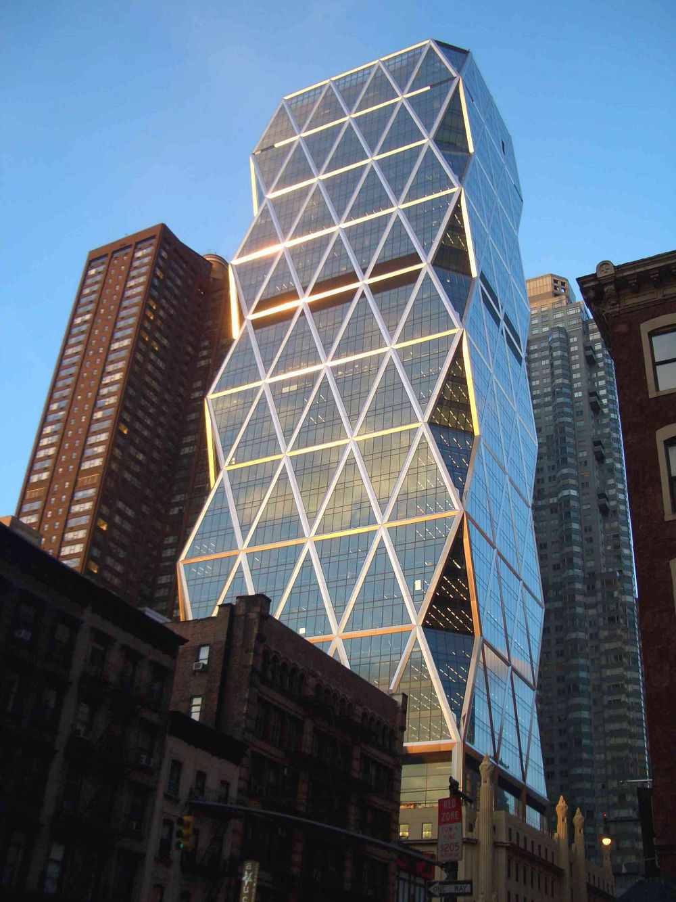
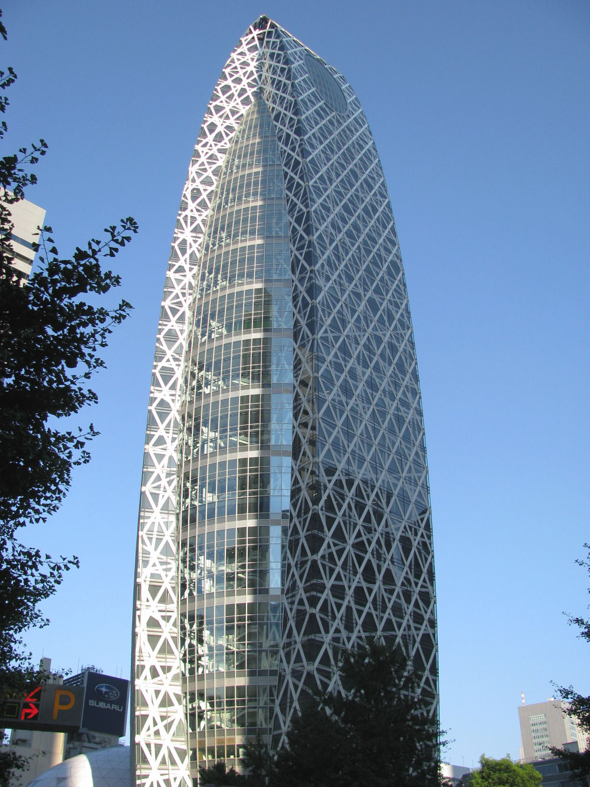
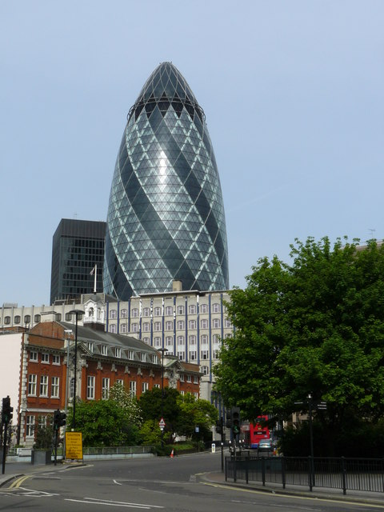
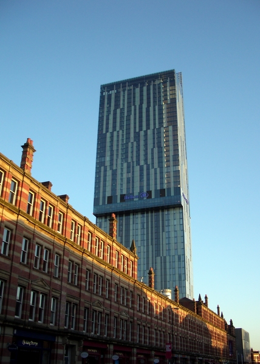

Rozwój tego nurtu datuje się na rok 1965 i jest pochodną głównego stylu nazywanego postmodernizmem. Skupia się przede wszystkim na intensyfikacji eksploatacji najnowszych technologii, które zawierają się zarówno w jego wyposażeniu wewnątrz, jak i technice „obsługującej” budowlę na zewnątrz (baterie słoneczne, mechanizmy napędowe). Urządzenia stają się nie tylko funkcjonalnym elementem, ale także stanowią estetyczny walor wkomponowany w ogólną koncepcję budynku.
Teatr Narodowy w Pekinie
Hi-tech skupia się na intensywnym wykorzystaniu nowych technologii zarówno w konstrukcji budynków, jak i w ich wyposażeniu technicznym oraz opierający wyraz architektoniczny budynku na cechach. Elementy techniczne, szczególnie powtarzalne (żaluzje i ich mechanizmy napędowe, baterie słoneczne), stanowią rodzaj nowoczesnego ornamentu.
Nazwa stylu hi-tech została zaczerpnięta ze współczesnej technologii (ang. hi-tech).
Allianz Arena
Budynki high-tech często zawierają szereg materiałów przypominających produkcję przemysłową. Stal, szkło i beton są powszechnie stosowane w zaawansowanych technologicznie konstrukcjach, ponieważ te elementy wywołują wrażenie, że są produkowane masowo i są szeroko dostępne. Architekci tworzący w nurcie high-tech postanowili to, co zazwyczaj skrzętnie ukrywamy wysunąć na pierwszy plan. Myślenie o budynku jako fragmencie przestrzeni zostało porzucone na rzecz stworzenia wyjątkowego obiektu, który będzie dumny ze swojego zaawansowania technologicznego. Wczesne budynki high-tech były określane przez historyka Reynera Banhama jako „szopy z obsługą” ze względu na eksponowanie usług mechanicznych oprócz konstrukcji. Większość z tych wczesnych przykładów wykorzystywała odsłoniętą stal konstrukcyjną jako materiał z wyboru.Budynki zbudowane w stylu high-tech często mają wiele charakterystycznych elementów układu. Obejmują one otwarty plan piętra, duży obszar centralny obsługiwany przez wiele mniejszych pomieszczeń konserwacyjnych oraz powtarzające się elementy, które mogą być lub wydają się być w stanie odłączyć i wymienić w razie potrzeby. Przestrzenie lub elementy przeznaczone do obsługi i elementy mechaniczne, takie jak klimatyzatory, procesory wody i sprzęt elektryczny, pozostają odsłonięte i widoczne dla widza.
Najpopularniejsi architekci architektury hi-tech:
Chcesz dowiedzieć się więcej o architekturze hi-tech? Sprawdź Wikipedię, klikając tutaj.
Poznaj więcej budynków charakterystycznych dla hi-tech:
|
 Hearst Tower, Norman Foster |
 Mode Gakuen Cocoon Tower |
|
 30 St Mary Axe, Londyn, Norman Foster |
 Beetham Tower, Manchester, Ian Simpson |